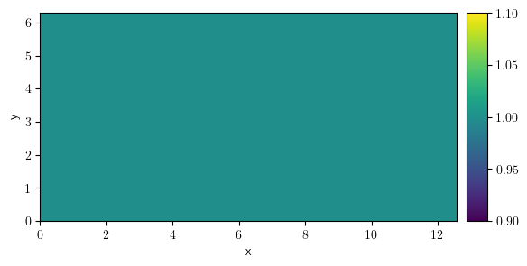
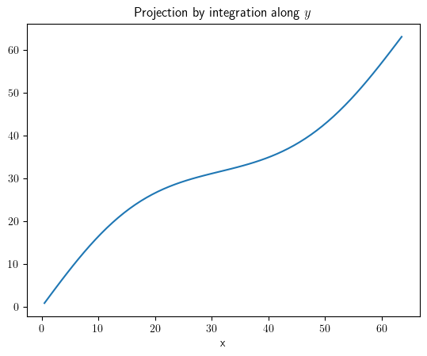

9. py-pde tutorial#
Homesite: https://www.zwickergroup.org/software
import datetime
import functools
from pprint import pprint
import matplotlib.pyplot as plt
import numpy as np
import scipy
from IPython.display import YouTubeVideo
from pde import (
PDE,
CahnHilliardPDE,
CartesianGrid,
Controller,
CylindricalSymGrid,
DiffusionPDE,
ExplicitSolver,
FieldCollection,
FileStorage,
KPZInterfacePDE,
MemoryStorage,
PDEBase,
PlotTracker,
PolarSymGrid,
PrintTracker,
ScalarField,
ScipySolver,
SphericalSymGrid,
UnitGrid,
VectorField,
solve_poisson_equation,
)
from pde.grids.operators.cartesian import _make_derivative2
[63d0ce6eb901:04188] shmem: mmap: an error occurred while determining whether or not /tmp/ompi.63d0ce6eb901.33333/jf.0/868483072/shared_mem_cuda_pool.63d0ce6eb901 could be created.
[63d0ce6eb901:04188] create_and_attach: unable to create shared memory BTL coordinating structure :: size 134217728
YouTubeVideo("igvs4ZKLjy8")
plt.ion()
<contextlib.ExitStack at 0x7ff3dd5d19d0>
np.set_printoptions(
precision=1, suppress=True, formatter={"float": "{:0.1f}".format}, linewidth=50
)
9.1. Grids#
grid = UnitGrid(shape=[32, 32])
grid.plot(title=f"Area={grid.volume}")
{kind=link}
grid = CartesianGrid(bounds=[[0, 2], [0, 1]], shape=[16, 32])
grid.plot(title=f"Area={grid.volume}")
{kind=link}
{kind=link}
{kind=link}
{kind=link}
9.2. Fields#
grid = CartesianGrid(bounds=[[0, 4 * np.pi], [0, 2 * np.pi]], shape=[128, 32])
field = ScalarField(grid, data=1)
print(field.data)
[[1.0 1.0 1.0 ... 1.0 1.0 1.0]
[1.0 1.0 1.0 ... 1.0 1.0 1.0]
[1.0 1.0 1.0 ... 1.0 1.0 1.0]
...
[1.0 1.0 1.0 ... 1.0 1.0 1.0]
[1.0 1.0 1.0 ... 1.0 1.0 1.0]
[1.0 1.0 1.0 ... 1.0 1.0 1.0]]
field += 4
print(field.data)
[[5.0 5.0 5.0 ... 5.0 5.0 5.0]
[5.0 5.0 5.0 ... 5.0 5.0 5.0]
[5.0 5.0 5.0 ... 5.0 5.0 5.0]
...
[5.0 5.0 5.0 ... 5.0 5.0 5.0]
[5.0 5.0 5.0 ... 5.0 5.0 5.0]
[5.0 5.0 5.0 ... 5.0 5.0 5.0]]
grid = CartesianGrid(bounds=[[0, 4 * np.pi], [0, 2 * np.pi]], shape=[128, 32])
data = np.arange(128 * 32).reshape(grid.shape)
field = ScalarField(grid, data=data)
{kind=link}
print(field.data)
[[0.0 1.0 2.0 ... 29.0 30.0 31.0]
[32.0 33.0 34.0 ... 61.0 62.0 63.0]
[64.0 65.0 66.0 ... 93.0 94.0 95.0]
...
[4000.0 4001.0 4002.0 ... 4029.0 4030.0 4031.0]
[4032.0 4033.0 4034.0 ... 4061.0 4062.0 4063.0]
[4064.0 4065.0 4066.0 ... 4093.0 4094.0 4095.0]]
field.interpolate([2.1, 0.3])
array(669.5)
field = ScalarField.random_normal(grid=grid)
field.plot(title=f"Average={field.average:.3f}", colorbar=True);
{kind=link}
field = ScalarField.random_colored(grid=grid, exponent=-4, label="Random field")
field.plot()
{kind=link}
field.to_file("random_field.hdf")
!(ls random_field.hdf)
---------------------------------------------------------------------------
ModuleNotFoundError Traceback (most recent call last)
Cell In[20], line 1
----> 1 field.to_file("random_field.hdf")
2 get_ipython().system('(ls random_field.hdf)')
File /usr/lib/python3.12/site-packages/pde/fields/base.py:304, in FieldBase.to_file(self, filename, **kwargs)
300 extension = Path(filename).suffix.lower()
302 if extension in {".hdf", ".hdf5", ".he5", ".h5"}:
303 # save data in hdf5 format
--> 304 import h5py
306 with h5py.File(filename, "w") as fp:
307 self._write_hdf_dataset(fp, **kwargs)
ModuleNotFoundError: No module named 'h5py'
field_loaded = ScalarField.from_file("random_field.hdf")
field_loaded.plot()
{kind=link}
{kind=link}
project_x = field.project("y")
project_x.plot(title="Projection by integration along $y$");

{kind=link}
9.3. Differential operators#
grid = CartesianGrid(bounds=[[0, 4 * np.pi], [0, 2 * np.pi]], shape=[128, 32])
field = ScalarField.from_expression(grid=grid, expression="sin(x) * cos(y)")
laplace_dir = field.laplace(bc={"value": 0})
laplace_dir.plot(
title="Laplacian of field with Dirichlet boundary conditions", colorbar=True
);
{kind=link}
laplace_neu = field.laplace(bc={"derivative": 0})
laplace_neu.plot(
title="Laplacian of field with Neumann boundary conditions", colorbar=True
)
{kind=link}
laplace_mix = field.laplace(bc=[{"value": 0}, {"derivative": 0}])
laplace_mix.plot(
title="Laplacian of field with mixed boundary conditions", colorbar=True
)
{kind=link}
grid_per = CartesianGrid(
bounds=[[0, 4 * np.pi], [0, 2 * np.pi]], shape=[128, 32], periodic=True
)
field_per = ScalarField.from_expression(grid=grid_per, expression="sin(x) * cos(y)")
laplace_per = field_per.laplace("periodic")
laplace_per.plot(title="Laplacian of periodic field", colorbar=True)
{kind=link}
grid_mixed = CartesianGrid(
bounds=[[0, 4 * np.pi], [0, 2 * np.pi]], shape=[128, 32], periodic=[True, False]
)
field_mixed = ScalarField.from_expression(grid=grid_mixed, expression="sin(x) * cos(y)")
laplace_mixed = field_mixed.laplace(bc=["periodic", {"derivative": 0}])
laplace_mixed.plot(title="Laplacian of mixed field", colorbar=True)
{kind=link}
9.4. Vector Fields#
grid_per = CartesianGrid(
bounds=[[0, 4 * np.pi], [0, 2 * np.pi]], shape=[128, 32], periodic=True
)
vector_field = VectorField.from_expression(grid=grid_per, expressions=["1", "cos(x)"])
vector_field.plot();
{kind=link}
field_per = ScalarField.from_expression(grid=grid_per, expression="sin(x) * cos(y)")
field_grad = field_per.gradient("natural")
field_grad.plot()
{kind=link}
print(field_grad.average)
[0.0 -0.0]
field_grad.plot(method="quiver", title="Quiver plot of the gradient field")
{kind=link}
field_grad.plot(method="streamplot", title="Stream plot of the gradient field")
{kind=link}
gradient_norm = field_grad.to_scalar("norm")
gradient_norm.plot(title="Norm of gradient of field", colorbar=True)
{kind=link}
comp_x = field_grad[0]
comp_y = field_grad[1]
comp_x.plot(title="$x$-component of gradient", colorbar=True)
{kind=link}
comp_y.plot(title="$y$-component of gradient", colorbar=True)
{kind=link}
gradient_expl_norm = (comp_x**2 + comp_y**2) ** 0.5
np.allclose(gradient_expl_norm.data, gradient_norm.data)
True
field_hess = field_grad.gradient("natural", label="Hessian of field")
field_hess.attributes
{'class': 'Tensor2Field',
'grid': CartesianGrid(bounds=((0.0, 12.566370614359172), (0.0, 6.283185307179586)), shape=(128, 32), periodic=[True, True]),
'label': 'Hessian of field',
'dtype': dtype('float64')}
{kind=link}
scalar_field = field_grad @ field_hess @ field_grad
scalar_field.plot(title="Gradient . Hessian . Gradient", colorbar=True)
{kind=link}
{kind=link}
9.5. Field collections#
grid_pol = PolarSymGrid(radius=[2, 7], shape=32)
scalar_field1 = ScalarField.from_expression(
grid=grid_pol, expression="r**2", label="Increasing"
)
scalar_field2 = ScalarField.from_expression(
grid=grid_pol, expression="1/r", label="Decreasing"
)
collection = FieldCollection(fields=[scalar_field1, scalar_field2])
collection.attributes
{'class': 'FieldCollection',
'label': None,
'dtype': dtype('float64'),
'fields': [{'class': 'ScalarField',
'grid': PolarSymGrid(radius=(2, 7), shape=(32,)),
'label': 'Increasing',
'dtype': dtype('float64')},
{'class': 'ScalarField',
'grid': PolarSymGrid(radius=(2, 7), shape=(32,)),
'label': 'Decreasing',
'dtype': dtype('float64')}]}
collection.plot()
{kind=link}
collection.plot("image")
{kind=link}
{kind=link}
grid = UnitGrid(shape=[96, 64])
sf = ScalarField.random_colored(grid=grid, exponent=-3)
vf = VectorField.random_harmonic(grid=grid, modes=1)
fc = FieldCollection(fields=[sf, vf])
{kind=link}
9.6. Solving PDEs#
grid = CartesianGrid(bounds=[[-1, 1], [-1, 1]], shape=64)
state = ScalarField.from_expression(grid=grid, expression="exp(-(x**2 + y**2) * 100)")
state.plot(title="Initial state")
{kind=link}
eq = DiffusionPDE()
result = eq.solve(state=state, t_range=1, dt=1e-4)
result.plot(title="State after $t=1$")
{kind=link}
grid = UnitGrid(shape=[64, 64])
state = ScalarField.random_uniform(grid=grid, vmin=-1, vmax=1)
eq = CahnHilliardPDE()
result = eq.solve(state=state, t_range=1e2, dt=1e-3)
result.plot(title="State after $t=100$", colorbar=True)
{kind=link}
grid = CartesianGrid(
bounds=[[0, 4 * np.pi], [0, 4 * np.pi]], shape=[32, 32], periodic=[False, True]
)
state = ScalarField.random_uniform(grid=grid, vmin=0.2, vmax=0.3)
bc_x_left = {"derivative": 0.1}
bc_x_right = {"value": "sin(y)"}
bc_x = [bc_x_left, bc_x_right]
bc_y = "periodic"
eq = DiffusionPDE(bc=[bc_x, bc_y])
result = eq.solve(state=state, t_range=10, dt=0.005)
result.plot(title="Diffusion with complex boundary conditions")
{kind=link}
{kind=link}
9.7. Trackers#
grid = UnitGrid(shape=[128, 128])
state = ScalarField.random_uniform(grid=grid, vmin=-0.5, vmax=0.5)
eq = CahnHilliardPDE()
eq.solve(state=state, t_range=1e3, dt=0.01, tracker=PlotTracker(interval=100))
ScalarField(grid=UnitGrid(shape=(128, 128), periodic=[False, False]), data=[[-1.0 -1.0 -1.0 ... -1.0 -1.0 -1.0]
[-1.0 -1.0 -1.0 ... -1.0 -1.0 -1.0]
[-1.0 -1.0 -1.0 ... -1.0 -1.0 -1.0]
...
[1.0 1.0 0.9 ... 1.0 1.0 1.0]
[1.0 1.0 1.0 ... 1.0 1.0 1.0]
[1.0 1.0 1.0 ... 1.0 1.0 1.0]])
trackers = ["progress", PrintTracker(interval="0:01")]
eq.solve(state=state, t_range=1e3, dt=0.01, tracker=trackers)
t=0, c=-0.0016±0.29
t=0.01, c=-0.0016±0.245
t=0.05, c=-0.0016±0.177
t=0.94, c=-0.0016±0.11
t=11.61, c=-0.0016±0.438
t=53.6, c=-0.0016±0.711
t=137.61, c=-0.0016±0.786
t=258.02, c=-0.0016±0.823
t=401.66, c=-0.0016±0.846
t=559.31, c=-0.0016±0.864
t=723.88, c=-0.0016±0.877
t=892.53, c=-0.0016±0.888
ScalarField(grid=UnitGrid(shape=(128, 128), periodic=[False, False]), data=[[-1.0 -1.0 -1.0 ... -1.0 -1.0 -1.0]
[-1.0 -1.0 -1.0 ... -1.0 -1.0 -1.0]
[-1.0 -1.0 -1.0 ... -1.0 -1.0 -1.0]
...
[1.0 1.0 0.9 ... 1.0 1.0 1.0]
[1.0 1.0 1.0 ... 1.0 1.0 1.0]
[1.0 1.0 1.0 ... 1.0 1.0 1.0]])
storage = MemoryStorage()
result = eq.solve(
state=state, t_range=100, dt=0.01, tracker=storage.tracker(interval=10)
)
result.plot()
{kind=link}
for field in storage:
print(f"{field.integral:.3g}, {field.fluctuations:.3g}")
-26.1, 0.29
-26.1, 0.382
-26.1, 0.592
-26.1, 0.651
-26.1, 0.682
-26.1, 0.704
-26.1, 0.721
-26.1, 0.733
-26.1, 0.744
-26.1, 0.753
-26.1, 0.762
storage_write = FileStorage(filename="simulation.hdf")
result = eq.solve(
state=state, t_range=100, dt=0.01, tracker=storage_write.tracker(interval=10)
)
result.plot()
storage_read = FileStorage(filename="simulation.hdf")
for field in storage_read:
print(f"{field.integral:.3g}, {field.fluctuations:.3g}")
-26.1, 0.29
-26.1, 0.382
-26.1, 0.592
-26.1, 0.651
-26.1, 0.682
-26.1, 0.704
-26.1, 0.721
-26.1, 0.733
-26.1, 0.744
-26.1, 0.753
-26.1, 0.762
9.8. Stochastic#
grid = UnitGrid(shape=[64])
state = ScalarField.random_harmonic(grid=grid)
eq = KPZInterfacePDE(noise=1)
storage = MemoryStorage()
result = eq.solve(state=state, t_range=100, dt=0.01, tracker=storage.tracker(1))
result.plot(title="Final configuration")

<pde.tools.plotting.PlotReference at 0x7f23c55c41c0>
9.9. Poisson#
grid = CartesianGrid(bounds=[[0, 2 * np.pi]] * 2, shape=64)
bcs = [{"value": "sin(y)"}, {"value": "sin(x)"}]
field_zero = ScalarField(grid=grid)
result_laplace = solve_poisson_equation(rhs=field_zero, bc=bcs)
result_laplace.plot(title="Solution to Laplace's equation", colorbar=True)
{kind=link}
field_one = ScalarField(grid=grid, data=-1)
result_poisson = solve_poisson_equation(rhs=field_one, bc={"value": "0"})
result_poisson.plot(colorbar=True)
{kind=link}
result_poisson.laplace(bc={"value": "0"})
ScalarField(grid=CartesianGrid(bounds=((0.0, 6.283185307179586), (0.0, 6.283185307179586)), shape=(64, 64), periodic=[False, False]), data=[[-1.0 -1.0 -1.0 ... -1.0 -1.0 -1.0]
[-1.0 -1.0 -1.0 ... -1.0 -1.0 -1.0]
[-1.0 -1.0 -1.0 ... -1.0 -1.0 -1.0]
...
[-1.0 -1.0 -1.0 ... -1.0 -1.0 -1.0]
[-1.0 -1.0 -1.0 ... -1.0 -1.0 -1.0]
[-1.0 -1.0 -1.0 ... -1.0 -1.0 -1.0]])
9.10. Diffusion equation#
eq = PDE(rhs={"u": "laplace(u)"})
grid = UnitGrid(shape=[64, 64])
state = ScalarField.random_normal(grid=grid, label="Initial state")
sol = eq.solve(state=state, t_range=10, dt=1e-2)
sol.label = "Final state"
FieldCollection(fields=[state, sol]).plot()
{kind=link}
a, b = 1, 3
d0, d1 = 1, 0.1
eq = PDE(
rhs={
"u": f"{d0} * laplace(u) + {a} - ({b} + 1) * u + u**2 * v",
"v": f"{d1} * laplace(v) + {b} * u - u**2 * v",
}
)
grid = UnitGrid(shape=[64, 64])
u = ScalarField(grid=grid, data=a, label="Field $u$")
v = b / a + 0.1 * ScalarField.random_normal(grid=grid, label="Field $v$")
state = FieldCollection(fields=[u, v])
sol = eq.solve(state=state, t_range=20, dt=1e-3, tracker=PlotTracker())
class KuramotoSivashinskyPDE(PDEBase):
"""Implementation of the normalized Kuramoto–Sivashinsky equation"""
def evolution_rate(self, state, t=0):
"""implement the python version of the evolution equation"""
state_lap = state.laplace(bc="natural")
state_lap2 = state_lap.laplace(bc="natural")
state_grad = state.gradient(bc="natural")
return -state_grad.to_scalar("squared_sum") / 2 - state_lap - state_lap2
grid = UnitGrid(shape=[64, 64])
state = ScalarField.random_uniform(grid=grid)
eq = KuramotoSivashinskyPDE()
result = eq.solve(state=state, t_range=10, dt=0.01)
{kind=link}
grid = UnitGrid(shape=[32, 32])
field = ScalarField.random_uniform(grid=grid, vmin=-1, vmax=1)
eq = DiffusionPDE()
solver1 = ExplicitSolver(pde=eq)
controller1 = Controller(solver=solver1, t_range=1, tracker=None)
sol1 = controller1.run(initial_state=field, dt=1e-3)
sol1.label = "py-pde"
pprint(controller1.diagnostics)
{'controller': {'jit_count': {'make_stepper': 11, 'simulation': 0},
'process_count': 1,
'profiler': {'compilation': 7.091595646999991,
'solver': 0.0371080500000005,
'tracker': 3.969099998357706e-05},
'solver_duration': '0:00:00.037145',
'solver_start': '2023-12-24 13:08:30.108362',
'stop_reason': 'Reached final time',
'successful': True,
't_end': 1.0,
't_final': 1.0,
't_start': 0},
'package_version': '0.33.3',
'solver': {'backend': 'numba',
'class': 'ExplicitSolver',
'dt': 0.001,
'pde_class': 'DiffusionPDE',
'scheme': 'euler',
'state_modifications': 0.0,
'steps': 1000,
'stochastic': False}}
solver2 = ScipySolver(pde=eq)
controller2 = Controller(solver=solver2, t_range=1, tracker=None)
sol2 = controller2.run(initial_state=field)
sol2.label = "scipy"
pprint(controller2.diagnostics)
{'controller': {'jit_count': {'make_stepper': 1, 'simulation': 0},
'process_count': 1,
'profiler': {'compilation': 1.4302910570000051,
'solver': 0.002160049999986313,
'tracker': 3.3870000009983414e-05},
'solver_duration': '0:00:00.002188',
'solver_start': '2023-12-24 13:08:32.156849',
'stop_reason': 'Reached final time',
'successful': True,
't_end': 1.0,
't_final': 1.0,
't_start': 0},
'package_version': '0.33.3',
'solver': {'backend': 'numba',
'class': 'ScipySolver',
'dt': None,
'pde_class': 'DiffusionPDE',
'steps': 50,
'stochastic': False}}
title = f"Mean squared deviation: {((sol1 - sol2)**2).average:.2g}"
FieldCollection(fields=[sol1, sol2]).plot(title=title)
{kind=link}
grid = CylindricalSymGrid(radius=5, bounds_z=[0, 16], shape=[15, 16])
grid = CartesianGrid(bounds=[[0, 4 * np.pi], [0, 2 * np.pi]], shape=[128, 32])
field = ScalarField(grid=grid, data=1)
field.plot()

{kind=link}
<pde.tools.plotting.PlotReference at 0x7f23c51a6740>
x, y = grid.axes_coords
for i in range(len(x)):
for j in range(len(y)):
field.data[i, j] = 0.5 * i + j
field.plot()
{kind=link}
field = ScalarField.random_normal(grid=grid, mean=0.5, std=0.5)
field.plot(title=f"Average={field.average:.3f}", colorbar=True)

<pde.tools.plotting.PlotReference at 0x7f23bef868c0>
slice_x = field.slice(position={"y": np.pi})
slice_x.plot(title=r"Slice field along line $y=\pi$")
project_x = field.project(axes="y")
project_x.plot(title="Projection by integration along $y$")
{kind=link}
{kind=link}
field = ScalarField.from_expression(grid=grid, expression="sin(x) * cos(y)")
field.plot(title=f"Average={field.average:f}", colorbar=True);
grid_pol = PolarSymGrid(radius=[2, 7], shape=32)
scalar_field1 = ScalarField.from_expression(
grid=grid_pol, expression="r**2", label="Increasing"
)
scalar_field2 = ScalarField.from_expression(
grid=grid_pol, expression="150/r", label="Decreasing"
)
collection = FieldCollection(fields=[scalar_field1, scalar_field2])
collection.plot()

[<pde.tools.plotting.PlotReference at 0x7f23be96f400>,
<pde.tools.plotting.PlotReference at 0x7f23bf1020c0>]
collection.plot("image")
{kind=link}
field_sum = collection[0] + collection[1]
field_sum.plot(kind="image")
{kind=link}
grid_per = CartesianGrid(
bounds=[[0, 4 * np.pi], [0, 2 * np.pi]], shape=[128, 32], periodic=True
)
field_per = ScalarField.from_expression(grid=grid_per, expression="sin(x) * cos(y)")
laplace_per = field_per.laplace(bc="periodic")
laplace_per.plot(title="Laplacian of periodic field", colorbar=True)
grid = CartesianGrid(
bounds=[[0, 4 * np.pi], [0, 2 * np.pi]], shape=[128, 32], periodic=False
)
field = ScalarField.from_expression(grid=grid, expression="sin(x) * cos(y)")
bc_x = ({"value": 0}, {"value": 0})
bc_y = ({"value": 0}, {"value": 0})
laplace_dir = field.laplace(bc=[bc_x, bc_y])
laplace_dir.plot(
title="Laplacian of field with Dirichlet boundary conditions", colorbar=True
)
laplace_neu = field.laplace(bc={"derivative": 0})
laplace_neu.plot(
title="Laplacian of field with Neumann boundary conditions", colorbar=True
)
laplace_mix = field.laplace(bc=[{"value": 0}, {"derivative": 0}])
laplace_mix.plot(
title="Laplacian of field with mixed boundary conditions", colorbar=True
)
grid_mixed = CartesianGrid(
bounds=[[0, 4 * np.pi], [0, 2 * np.pi]], shape=[128, 32], periodic=[True, False]
)
field_mixed = ScalarField.from_expression(grid=grid_mixed, expression="sin(x) * cos(y)")
laplace_mixed = field_mixed.laplace(bc=["periodic", {"derivative": 0}])
laplace_mixed.plot(title="Laplacian of mixed field", colorbar=True)
eq = PDE(rhs={"f": "1 * laplace(f)"})
grid = UnitGrid(shape=[64, 64])
state = ScalarField.random_normal(grid=grid, mean=0.5, std=1)
state.plot(title="Initial state")
{kind=link}
result = eq.solve(state=state, t_range=10, dt=0.1)
result.plot(title="Final state")
{kind=link}
center, width = 32, 50
state = ScalarField.from_expression(
grid=grid, expression=f"exp(-((x-{center})**2 + (y-{center})**2)/{width})"
)
state.plot(title="Initial state")
{kind=link}
result = eq.solve(state=state, t_range=100, dt=0.1)
result.plot(title="Final state")
{kind=link}
bc_x = ({"value": 0}, {"value": 1})
bc_y = ({"derivative": 0}, {"derivative": 0})
eq_dir = PDE(rhs={"f": "laplace(f)"}, bc=[bc_x, bc_y])
grid = UnitGrid(shape=[64, 64], periodic=False)
state = ScalarField.random_normal(grid=grid, mean=0.5, std=1)
state.plot(title="Initial state")
{kind=link}
result = eq_dir.solve(state=state, t_range=100, dt=0.1)
result.plot(title="Final state")
{kind=link}
slice_x = result.slice(position={"y": np.pi})
slice_x.plot(title=r"Slice field along line $y=\pi$")
{kind=link}
project_x = result.project(axes="y")
project_x.plot(title="Projection by integration along $y$")

{kind=link}
<pde.tools.plotting.PlotReference at 0x7f23bd5ef2c0>
field.to_file(filename="random_field.hdf")
field_loaded = ScalarField.from_file(filename="random_field.hdf")
field_loaded.plot()
{kind=link}
def ETA(step, maxStep, startTime):
_ETA = None
total_dt = 0
dt = 0
if step == 0:
_ETA = "Indeterminate"
else:
dt = datetime.datetime.now() - startTime
dt = dt.seconds
total_dt = dt / step * maxStep
_ETA = startTime + datetime.timedelta(seconds=total_dt)
_ETA = str(_ETA.time())
print(
f"{int(100 * step / maxStep):>3} % completed. ETA: {_ETA} ({int(total_dt - dt)} seconds remain)."
+ "\t" * 5,
end="\r",
)
width = 10
height = 5
resolution = (2**5) / 10
grid = CartesianGrid(
bounds=[[0, width], [0, height]],
shape=[int(resolution * i) for i in [width, height]],
)
grid.plot()
{kind=link}
membrane_mask = ScalarField(grid=grid, dtype=float)
membrane_mask.data[:, 0] = 1.0
membrane_mask.plot()
{kind=link}
make_laplace_x = functools.partial(_make_derivative2, axis=0)
CartesianGrid.register_operator("laplace_x", make_laplace_x)
c_m = ScalarField.random_uniform(grid=grid)
c_m *= membrane_mask
c_m.plot()
{kind=link}
# c_m._apply_operator("laplace_x", bc="natural").plot()